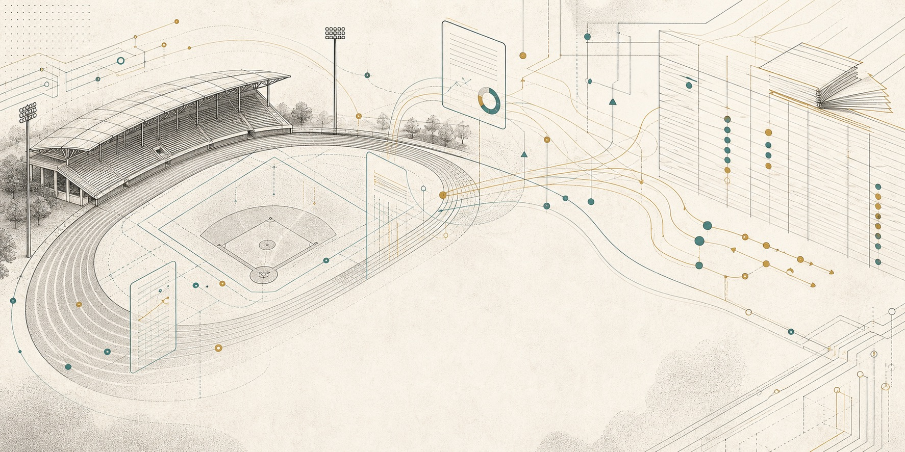

budget query assistant / 2022-2026
運動X科技預算查詢小幫手
想查一筆運動科技相關預算時，先用這個頁面確認它比較像政策總額、年度科目、基金補助、地方場域， 還是協會端應用。點選項目後，可以快速查看來源、執行狀態、合作單位與下一步查核問題。
查詢提醒先判斷預算身分，再看協會是否直接承接。
目前公開資料更常見的是政府、國科會或基金先到學研、地方、法人與新創，再進入場域或協會應用。
overview
總覽說明
用四個指標快速抓預算規模、科研線索、地方場域與協會角色，再照三步驟縮小查核範圍。
1先選預算身分
從中央、科研、地方、產業或協會應用端縮小範圍。
2再看執行程度
區分提案、執行中、已有成果與仍待公開對帳的項目。
3最後打開詳情
核對來源連結、公開資訊進度與下一步查核問題。
query workbench
查詢預算
先用預算層級、執行程度與縣市縮小範圍，再切換列表或卡片檢視，點開項目查看來源與公開資訊進度。
source registry
資料來源
本頁以公開可查的中央政策、科研計畫、預決算、政府採購與 open data 入口作為索引；每筆預算詳情仍需回到原始來源確認最新版本與授權條款。
行政院全球資訊網
政策新聞、院會與跨部會計畫線索。
www.ey.gov.tw/國科會全球資訊網科技計畫、研究補助、新聞資料與查詢入口。
www.nstc.gov.tw/政府科技計畫資訊網跨部會科技計畫與年度科技預算查詢入口。
gstp.stpi.narl.org.tw/政府研究資訊系統 GRB研究計畫名稱、主持人、關鍵字與成果摘要查詢。
www.grb.gov.tw/運動部全民運動署運動科技、場域、補助與政策公告入口。
www.sa.gov.tw/行政院主計總處中央政府預算、決算與補捐助資訊入口。
www.dgbas.gov.tw/公共工程委員會政府採購、決標與委辦案追蹤入口。
www.pcc.gov.tw/政府資料開放平臺open data 資料集與 API 查詢入口。
data.gov.tw/